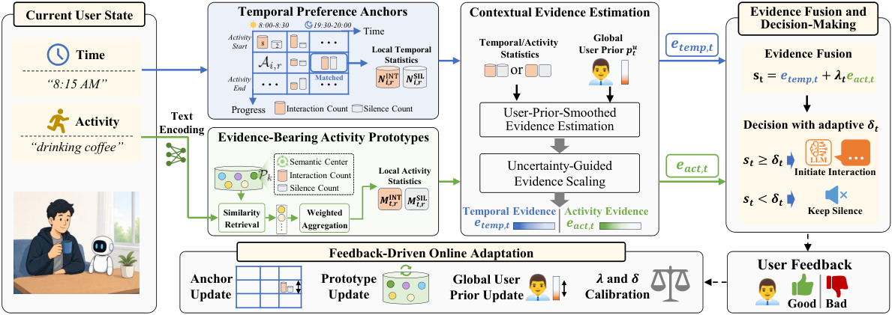
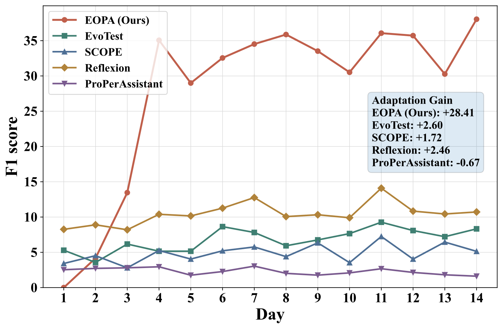

Contents · 10 sections
1What problem is it actually solving?2Pipeline overview: two count ledgers and one threshold3Temporal anchors: counts per time slot and activity progress4Evidence score: share and observation count folded together5Activity prototypes: find similar activities and borrow their counts6Fusion and decision: add the two, tune the threshold online7Experiments: a clear F1 gain, but on a simulated benchmark8Limitations as I see them9How a team building proactive push or proactive assistants could try it10VerdictSHARE
People working on proactive assistants, notification push, or the question of "when to interrupt the user" should read this paper, because it replaces "let a large model reflect on whether to speak" with a set of counts you can compute by hand, and the result is both faster and more accurate. The core idea in one sentence: keep separate counts of which past moments the user welcomed an interruption and which they did not, split by time of day, how far the current activity has progressed, and what the activity is, and use those counts to judge whether the current moment is worth speaking up. On a benchmark simulating 32 users for 14 days each, timing F1 rises from 10.66 for the strongest baseline to 30.46; the latency of a stay-silent decision drops from 688 ms to 1.96 ms, and daily online update time drops from 11.41 s to 0.39 s.
What problem is it actually solving?
Start with an illustrative scenario. An assistant in smart glasses checks every 2.5 minutes what the user is doing, for example "8:15, drinking coffee" or "8:40, starting the weekly report". It has to decide whether to say something now or stay quiet.
| Time (illustrative) | Activity | User A's preference | User B's preference |
|---|---|---|---|
| 8:15 | Drinking coffee, just started | Welcomes a reminder of today's schedule | Does not want to be disturbed |
| 8:40 | Writing the weekly report, just started | Welcomes an outline | Welcomes an outline |
| 9:20 | Writing the weekly report, 40 minutes in | Does not want to be disturbed | Does not want to be disturbed |
There are two difficulties. First, moments worth speaking up are very rare: in this paper's benchmark, only 1,814 of more than 160,000 polling moments are labeled as appropriate, 1.129%. Second, states that look alike need different decisions; writing a report at the start and halfway through are not the same.
Existing approaches fall into two groups. One fine-tunes a large model on interaction data, but positives are too few for the model to learn fine-grained timing preferences. The other has a large model summarize past feedback into textual lessons such as "the user dislikes interruptions in the morning"; such lessons rarely state where they apply, so they get overused or go unused.
So the authors ask: can feedback be stored as experience that maps precisely onto specific situations?

Pipeline overview: two count ledgers and one threshold
The method is called EOPA. It trains no model and asks no large model to reflect; it only maintains two count ledgers.
| Step | Input | What it does | Output |
|---|---|---|---|
| Time ledger | Current time, how many steps the current activity has lasted | Find the matching cell and read how often "speak" and "stay silent" were right before | Temporal evidence score |
| Activity ledger | Text embedding of the activity description | Find the 12 most similar activity prototypes and merge their counts weighted by similarity | Activity evidence score |
| Decision | The two evidence scores | Weighted sum; speak if above the threshold | Speak or stay silent |
| Response | Only when speaking | A 4B small model, with past well-rated responses as examples | One utterance |
| Update | User feedback | Add counts to the matched cell and prototype; periodically re-tune the weight and threshold | Updated ledgers |
The "evidence score" is the paper's own concept. In plain words, it is a score for "how safe is it to speak in this situation", which looks both at the share of past moments where speaking was welcome and at how many observations back that share.
Temporal anchors: counts per time slot and activity progress
Why split by time slot? The same user tolerates interruptions differently at different times of day. Why also split by activity progress? Help at the start of a task may be useful; interrupting halfway through is a distraction.
Concretely, a day is cut into 48 slots of 30 minutes; "progress" is how many consecutive polling steps the current activity segment has lasted. In the experiments the activity description comes straight from the simulator; the paper expects a real product to get it from live text captions of a video stream. How a segment is judged to end, so that progress restarts, is not stated in the paper; my reading is that the count restarts when the activity description changes. Each "slot × progress" cell is a temporal anchor, and it stores just two numbers: how often speaking was appropriate in this situation, , and how often silence was, .
Cells often hold few observations, so the raw share is unreliable. For instance, a cell seen once, where speaking happened to be right, has a share of 100%. The paper smooths with a prior. First it computes the user's overall speaking share across all past moments, , where are the totals regardless of cell; adding 0.5 and 1 keeps the share from being 0 or undefined before any data arrives. Then it estimates the cell's speaking probability as with . The more observations, the more the cell's own counts dominate.
Evidence score: share and observation count folded together
This is the most important step and the easiest to misread. A probability alone is not enough, because two cells with similar probabilities can have very different numbers of observations. The paper measures uncertainty with the Beta variance , where is the cell's total observations, then divides the probability by the standard deviation to get the evidence score .
A hand-computed set, assuming the user has so far had 20 speak-worthy steps out of 1,800, so :
| Cell counts (speak, silent) | Smoothed probability p | Evidence score e |
|---|---|---|
| (0, 0) never seen | 0.011 | 0.20 |
| (1, 3) | 0.158 | 1.19 |
| (6, 18) | 0.227 | 2.85 |
| (2, 22) | 0.077 | 1.51 |
| (0, 24) | 0.001 | 0.17 |
(1, 3) and (6, 18) both have a one-in-four speaking share, but the latter has more observations and more than twice the evidence score. That is exactly what the paper wants: well-supported cells speak louder.
But simplify the formula to and the evidence score grows with the square root of the observation count, so the (2, 22) cell, with a speaking share of only about 8%, scores 1.51, higher than the (1, 3) cell with about 16%. My reading: this means the evidence score is not a pure "probability of speaking"; in heavily observed cells, even a low speaking share can approach the threshold. The paper relies on online threshold tuning to absorb this.
Activity prototypes: find similar activities and borrow their counts
Why a second ledger for activities? Temporal anchors cannot tell apart different activities in the same slot; drinking coffee at 8:30 and being in a meeting at 8:30 call for different levels of interruption. Activity descriptions are free text, so cells cannot be listed in advance.
The paper maintains a set of "activity prototypes", in plain words a representative of a group of similar activities. Each prototype stores a semantic center (a text embedding) and speak and silent counts split by progress. The current description is encoded with a frozen all-mpnet-base-v2, the 12 most similar prototypes are retrieved, and each gets a weight:
is similarity, is the highest of the 12, and . The first factor gives more similar prototypes more weight; the second lowers all weights together when "even the closest one is not very close".
A hand-computed example: if the closest prototype has similarity 0.8, its weight is ; one at 0.7 gets . If the closest is only 0.4, its own weight is just 0.16. These weights multiply the prototypes' counts directly and are summed without normalization, so when the current activity resembles nothing known, the borrowed count total shrinks, the probability estimate moves toward the user's overall prior. The evidence score does not necessarily drop; it depends on how the borrowed counts split between speak and silent: in the earlier table, (0, 24) has evidence 0.17, lower than 0.20 for (0, 0). Probability and evidence are computed with exactly the same formulas as on the time side.
On update, if the current activity's similarity to its closest prototype is at least 0.96, the counts go to that prototype and its center moves toward the current vector by incremental averaging; otherwise a new prototype is created. 0.96 is a high bar. My reading: activity descriptions worded slightly differently will each become a new prototype, so the number of prototypes grows with the days.
Fusion and decision: add the two, tune the threshold online
The final score is , and the assistant speaks if is at least the threshold . and differ per user: the system keeps a recent history of both evidence scores and feedback, periodically replays these past decisions under a set of candidate parameters, and keeps the pair with the highest F1. The main text only says the replay is "periodic"; more implementation details and the hyperparameter analysis are in Appendix I.
Only after deciding to speak is the large model called to generate a response, with well-rated past responses chosen as examples. This split of "decide the timing, then generate the content" is the root of its speed: the more than 98% of moments that end in silence never call a large model.
Experiments: a clear F1 gain, but on a simulated benchmark
The benchmark is ProPerSim: 32 simulated users, each for 14 days, 160,632 polling moments in total. Timing labels are generated by Qwen3.5-397B from each simulated user's preferences. After every decision the system receives feedback on whether that step should have been a speaking moment.
| Method | Adaptation LLM | F1 | Recall | Precision | Accuracy |
|---|---|---|---|---|---|
| ProPerAssistant (fine-tuning) | None | 2.57 | 28.82 | 1.36 | 75.35 |
| EvoTest | GLM-5 | 8.53 | 20.40 | 6.10 | 95.58 |
| SCOPE | DeepSeek-V4 | 5.62 | 9.79 | 4.43 | 96.88 |
| Reflexion | DeepSeek-V4 | 10.66 | 24.05 | 7.04 | 95.76 |
| EOPA | None | 30.46 | 41.10 | 24.89 | 97.73 |
Accuracy means almost nothing here: positives are only 1.129%, so an assistant that never speaks scores 98.87% (my calculation from the paper's share), higher than every method in the table. This shows the numbers that matter are F1 and precision.
Converting EOPA's precision and recall to counts, roughly (because the paper's metrics are averaged per user, this is only an order of magnitude): of the 1,814 speak-worthy moments it hits about 746; at 24.89% precision that means about 3,000 interventions in total, about 6.7 per user per day, of which about 5 are badly timed. So it is far better than the baselines but still far from "almost never interrupting at the wrong time".
Swapping in different large models for reflection leaves the baselines' F1 around 10, which shows that a stronger large model alone helps little; the paper's explanation is that textual lessons cannot state the conditions where they apply, which may be an important bottleneck.
The incremental ablation:
| Configuration | F1 |
|---|---|
| User's overall speaking share only | 1.13 |
| Add temporal anchors (raw cell share) | 17.57 |
| Add prior smoothing and evidence scores | 25.81 |
| Add activity prototypes | 28.95 |
| Add online tuning of weight and threshold | 30.46 |
This shows the bulk comes from the temporal anchors themselves, from 1.13 to 17.57; prior smoothing and evidence scores add more than 8 points, showing that handling sparse cells is key. Activity prototypes add about 3.1 more points, and online tuning of the weight and threshold about 1.5 more.

The adaptation curve shows EOPA starts near 0 F1 on day one, climbs quickly over the first four days, and gains 28.41 points on average from days 1–3 to days 8–14, while baselines gain at most 2.60. This shows its performance improves markedly as feedback accumulates, and it performs poorly during the cold-start days.
On efficiency, average stay-silent latency drops from Reflexion's 688 ms to 1.96 ms, latency to the first response chunk when speaking drops from 695 ms to 65.9 ms, and daily update time drops from 11.41 s to 0.39 s. This means the timing decision itself costs almost no compute; the main cost left is the one 4B-model call when it speaks.
When only part of the feedback is randomly kept, F1 is 27.30 and 25.56 at 75% and 50%, and falls to 13.35 at 25%, still above Reflexion's 10.66 with full feedback. The loss is mostly in recall while precision holds, which shows that with less feedback it becomes more conservative rather than more prone to speak at random.
The paper also tests "similar states" specifically: pick two states sharing the same slot, progress, or activity description but with different labels, and count a pair correct only if both are judged right. EOPA's average accuracy is 38.60% versus 22.72% for Reflexion, which shows that counting by situation really does separate moments that look alike.
Limitations as I see them
First, the feedback assumption is too strong. In the benchmark every step yields feedback on whether to speak, including the more than 98% of moments when the assistant stayed silent. Real users do not tell a silent assistant "you should have said something just now". The sparse-feedback test drops feedback at random rather than in the "harder to get feedback when silent" pattern, so the drop to 13.35 F1 at 25% feedback does not yet represent real conditions.
Second, the labels and the judge come from the same large model. The 1,814 positive timing labels are generated by Qwen3.5-397B from the simulated users' preferences, and the personal-preference and communication-safety scores, which follow ProPerSim's rating dimensions and grade the assistant's responses once it speaks, are judged by it too. Temporal anchors that count by time slot are exactly good at learning "what time to speak" patterns, and the labeling model first estimates an hourly speaking frequency and then picks moments. My reading: this labeling may favor methods sensitive to time-slot patterns; the paper ran a human check, with the method and results in Appendix F.
Third, cold start is slow and false alarms remain frequent. Day-one F1 is near 0 and it takes three or four days of feedback to rise; at steady state, 24.89% precision means roughly 3 of every 4 interventions are badly timed. For a device that actually speaks up and interrupts people, that false-alarm rate is still high.
How a team building proactive push or proactive assistants could try it
- First separate the problem: check whether the current system decides "when to speak" and "what to say" in a single large-model call. If so, split it into two steps, with no large-model call for the timing decision.
- Start with temporal anchors: build a count table by 30-minute slot and current-activity duration in steps, smooth with the user's overall share as a prior, and launch this branch alone first to watch F1 and precision.
- Design feedback you can actually get: silent moments yield no feedback, so a user invoking the assistant themselves can serve as a missed-moment signal, and ignoring or dismissing it after it speaks as a false-alarm signal; check whether the count table still works under this skewed feedback.
- Then add activity prototypes: first check the quality of activity descriptions, lower a strict merge bar like 0.96, and monitor how fast the number of prototypes grows.
- Finally add threshold re-tuning: periodically replay recent data and pick the threshold with the best F1 or precision; for spoken interruptions, prefer precision.
Verdict
| Dimension | Assessment |
|---|---|
| Importance of the problem | Medium-high. Proactive assistants and edge devices are spreading, and interruption timing is central to the experience |
| Novelty of the method | Medium. Counts with Bayesian smoothing are classic; the novelty is organizing them by slot, progress, and activity semantics and scaling by variance into an evidence score |
| Experimental evidence | Medium-low. Large F1 gain, clear ablation, solid efficiency numbers; but entirely simulated users, labels and judge from the same large model, and an overly strong every-step feedback assumption |
| Engineering cost | Low. No model training and no large-model call for the decision: a frozen text encoder embeds the activity description, 12 similar prototypes are retrieved, and a few multiplications and divisions follow; from receiving the user state to a silence decision takes 1.96 ms on average |
| Worth trying? | Yes, as a baseline for timing decisions. Launch the temporal-anchor branch first, then validate with real feedback |
How did this read for you?
Hoot made a note. Thanks for the feedback.
One tap, no sign-in; tap again to undo. Only anonymous counts are kept, never who you are.
Discussion
Add experiment details, reproduction notes or a different take. Requires a GitHub sign-in.
Loading the discussion…